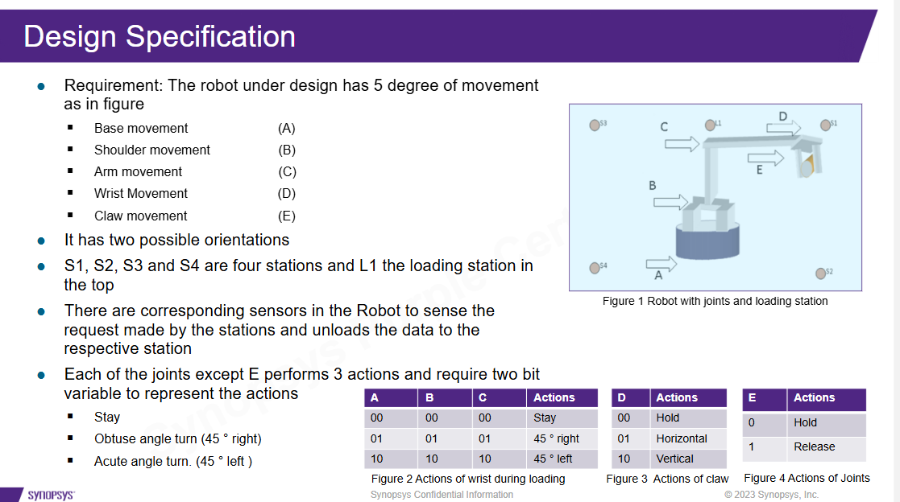
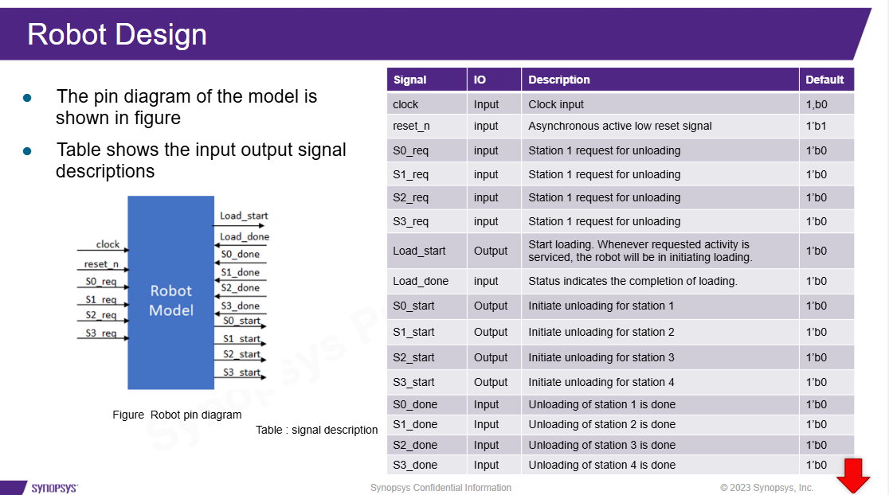
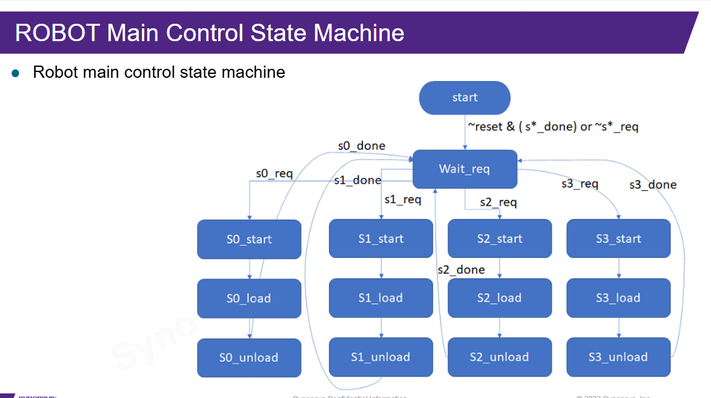
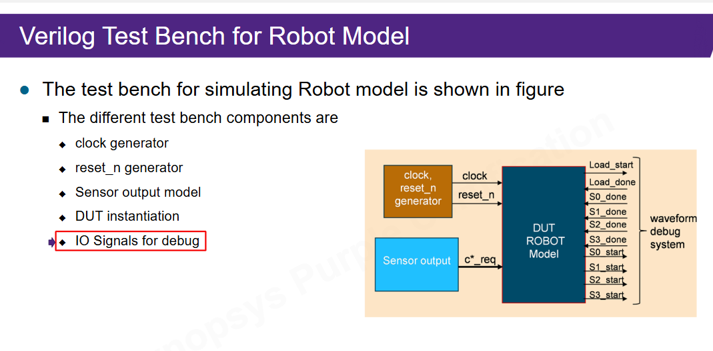

Ideia central
O ROBOT Model é um controlador RTL para um robô que carrega um objeto e o descarrega em uma estação solicitada. Ele é maior que os exemplos anteriores, mas ainda pequeno o bastante para estudar o fluxo completo.
O comportamento pode ser lido assim:
espera request
inicia carregamento
executa sequência de movimentos
inicia descarga da estação escolhida
aguarda done
retorna para esperaEspecificação funcional
A especificação define cinco movimentos: base, shoulder, arm, wrist e claw. Também define estações de descarga e uma estação de carga. O RTL precisa transformar essas regras físicas em estados e sinais digitais.

Detalhe: a suposição de uma requisição por vez
O slide assume que o robô atende apenas uma requisição por vez. Essa frase é pequena, mas muda o design: sem ela, o controle teria que decidir prioridade ou armazenar fila quando duas estações pedissem atendimento simultaneamente.
Interface do DUT
O DUT é o módulo robot_model. A primeira leitura deve ser a interface:
quais sinais entram, quais saem e qual papel cada um tem.

| Sinal | Leitura didática |
|---|---|
s*_req | A estação pediu atendimento. |
load_start | O DUT manda iniciar carregamento. |
s*_unloadstart | O DUT manda iniciar descarga em uma estação. |
load_done, s*_done | O ambiente informa que a operação terminou. |
FSM principal
O controle principal fica em espera até receber uma requisição. Depois ele escolhe o ramo da
estação, passa por carga, descarga e volta para espera quando recebe done.

Wait_req
-> S0_start -> S0_load -> S0_unload -> Wait_req
-> S1_start -> S1_load -> S1_unload -> Wait_req
-> S2_start -> S2_load -> S2_unload -> Wait_req
-> S3_start -> S3_load -> S3_unload -> Wait_reqAprofundamento: prioridade implícita
Se o RTL escolher requests com uma cadeia de if/else, existe prioridade na ordem
dos testes. Como o slide assume uma requisição por vez, essa prioridade não deve aparecer
em operação normal. Em projeto real, essa suposição precisa ficar documentada.
Carga e descarga
A operação de carga é uma submáquina curta: colocar o punho na horizontal, carregar o item, fechar a garra e voltar o punho para vertical. Depois disso, o robô entra na descarga da estação correspondente.
S*_load
-> load_start
-> Wrist Horizontal
-> Load item and close claw
-> Wrist Vertical
-> S*_unloadNa descarga, algumas estações seguem o caminho direto; outras exigem movimento adicional da junta C. O ponto didático é este:
condição física diferente -> sequência de estados diferenteTestbench
O testbench robot_model_tb modela o mundo ao redor do DUT. Ele gera clock, reset,
requests, sinais de done e arquivo de ondas para debug.

initial begin
clock = 1'b0;
forever #10 clock = ~clock;
end
Esse clock com #10 é correto em testbench, mas não é RTL sintetizável. O mesmo vale
para $fsdbDumpfile, $fsdbDumpvars e $finish.
README, setup e Makefile
O README mostra que o exemplo é operado como um pequeno projeto:
gtar -zxvf robot.tar.gz
cd robot
source robot.setup
cd sim
makeOs alvos principais são:
make SOC_Verification: roda a simulação básica.make SOC_Interactive_Debug: compila/simula com capacidade de debug interativo.make SOC_PP_Debug: abre debug pós-processado.make SOC_Coverage: roda com opções de coverage.
RTL versus testbench
| Parte | Papel | Entra em síntese? |
|---|---|---|
robot_model | DUT RTL | Sim, em princípio. |
robot_model_tb | Ambiente de simulação | Não. |
forever #10 | Clock de simulação | Não. |
$fsdbDumpvars | Waveform/debug | Não. |
Makefile | Automação | Não é hardware. |
Ligação com o RTL_LAB2
O ROBOT dá um roteiro para investigar o seu projeto:
- Qual é o DUT principal?
- Quais sinais são interface externa?
- Quem gera clock e reset?
- Quais sinais indicam fim de execução?
- Existe checker automático ou só waveform?
- Quais arquivos entram em simulação?
- Quais arquivos entram em síntese?
- Quais alvos do makefile rodam cada etapa?
Audio: precisa?
Não parece necessário ouvir o áudio inteiro para esta aula. Os slides já trazem especificação, interface, FSMs, testbench e comandos. O áudio seria útil apenas para demonstração de Verdi, detalhes da movimentação física ou convenções específicas do professor.
Base Markdown: aula didática, cobertura slide a slide.